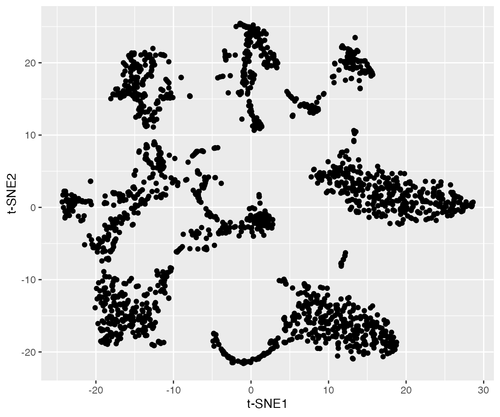
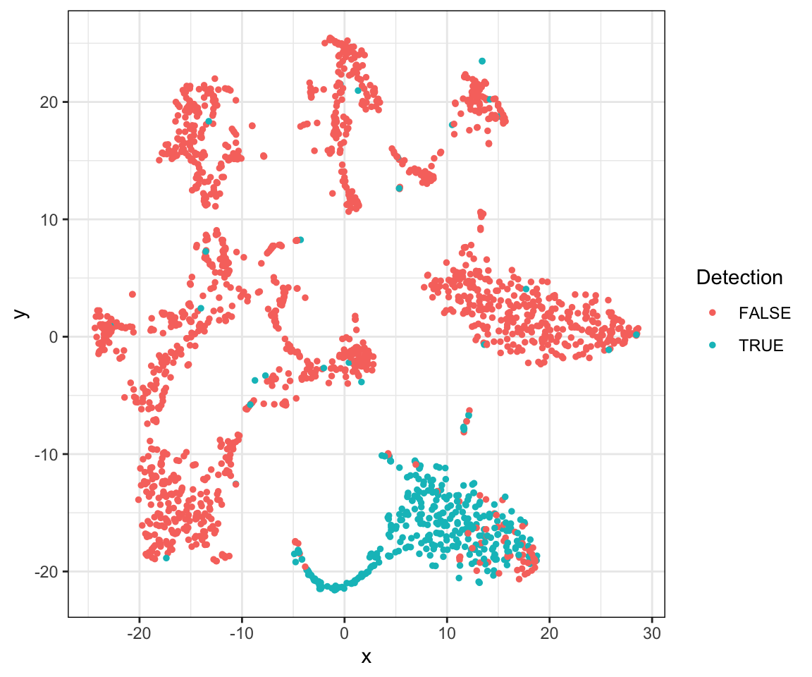
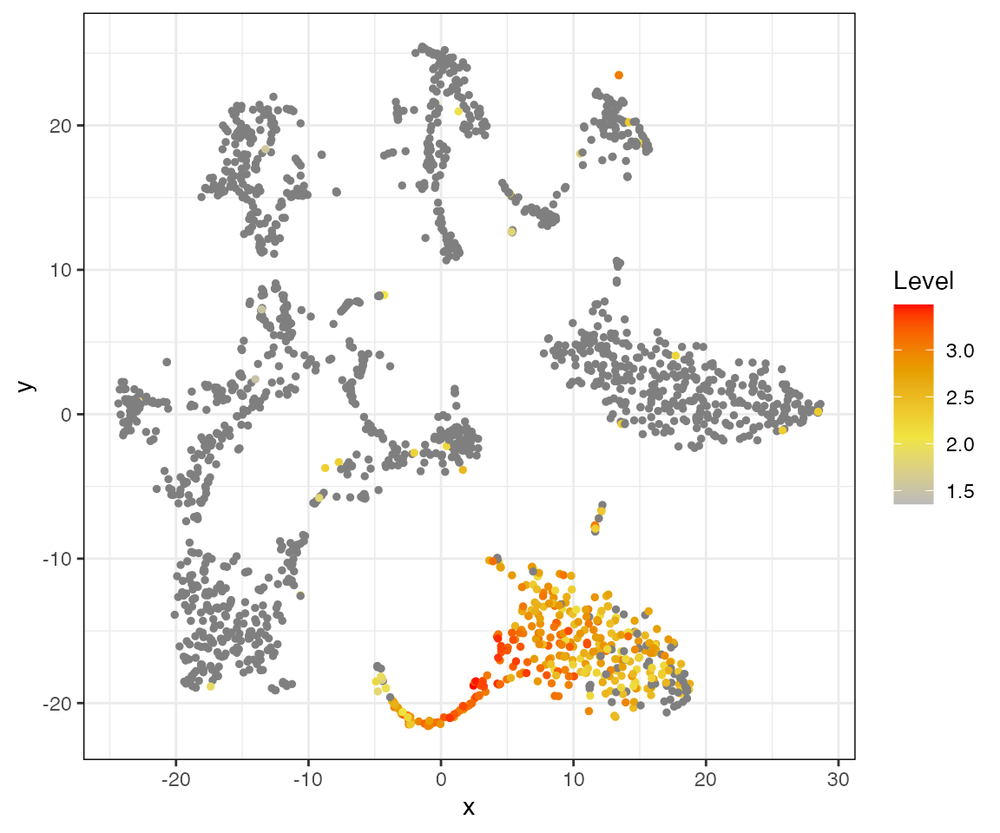
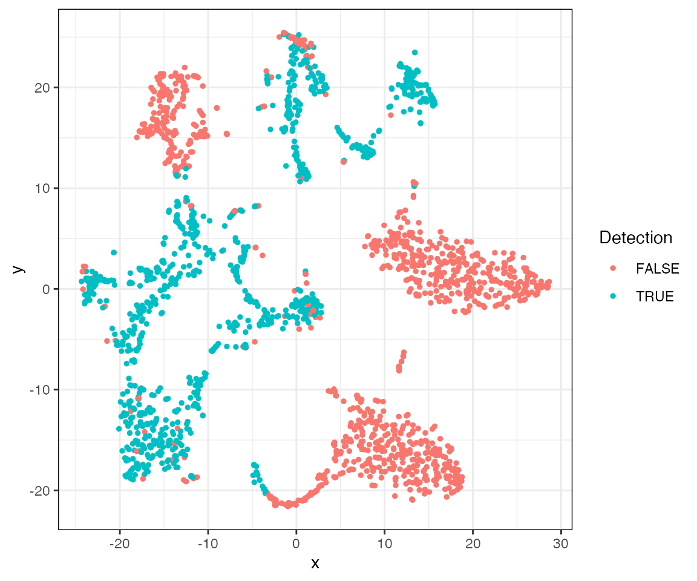
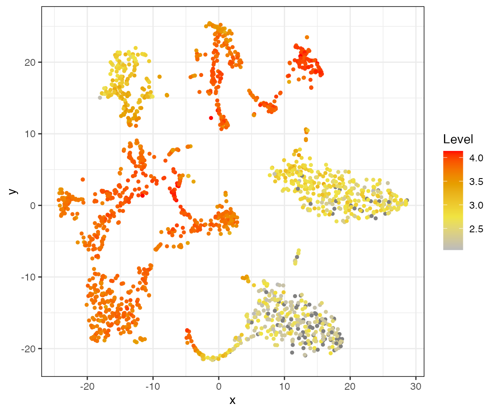
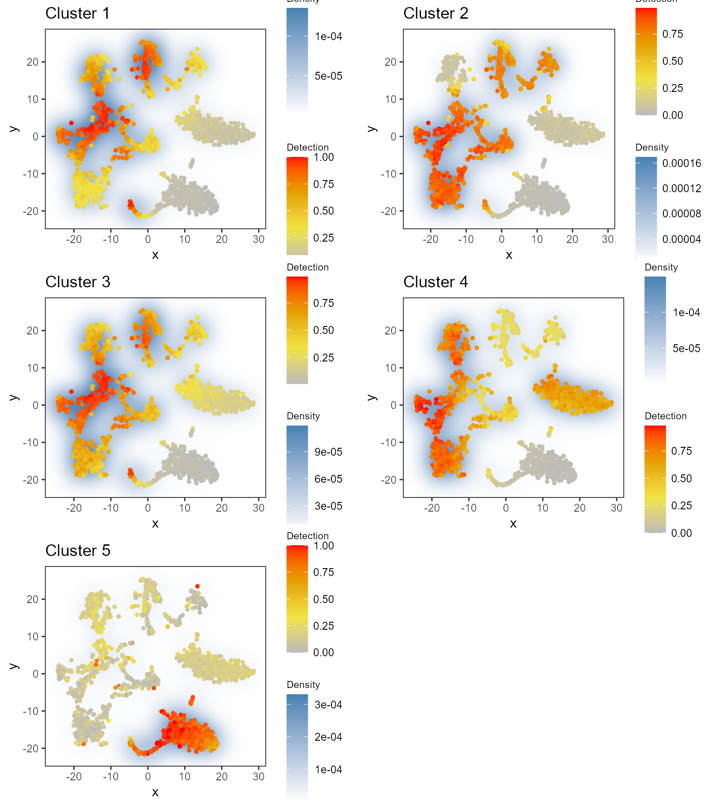

a02_example_highD_default.RmdIn this article, we show the application of singleCellHaystack on high-dimensional coordinates. Our method takes the coordinates of the cells in a >2-dimensional space (e.g. the first few principal components, etc), and predicts differentially expressed genes (DEGs) in that space. It does so by looking at the “expression distribution” of a gene (i.e. the distribution in the input space of cells that express a gene).
The data used in these examples can be found here. We recommend downloading the .rda file and loading it using the load() function. You can also download the individual data files separately.
load(url("https://genomics.virus.kyoto-u.ac.jp/alexisvdb/singleCellHaystack/tabula_muris_marrow_P7_2.rda")) ls() #> [1] "dat.expression" "dat.pca" "dat.tsne" "dat.umap"
This data should include the following objects:
dat.expression: a matrix object with the expression of genes (rows) in each cell (columns).dat.pca: the output of PCA. This data.frame contains the first 50 pricipal components (PCs).dat.tsne: a data.frame with t-SNE coordinates (2D) based on the first 50 PCs.dat.umap: a data.frame with UMAP coordinates (2D) based on the first 50 PCs.Let’s have a look at this example dataset:
# this data contains 12,030 genes and 1981 cells dim(dat.expression) #> [1] 12030 1981 # visualizing the cells in a t-SNE plot: ggplot(dat.tsne, aes(x = V1, y = V2)) + labs(x = "t-SNE1", y = "t-SNE2") + geom_point()

# the t-SNE coordinates are based on the 50 PCs dim(dat.pca) # the PCA data contains 1981 cells and 50 PCs #> [1] 1981 50
There are several groups of cells, although the borders between them are not clear and several might consist of additional subclusters. We can use singleCellHaystack to predict DEGs without relying on grouping of the cells into arbitrary clusters.
singleCellHaystack has two required input parameters: 1) the coordinates of cells in the input space, and 2) a table showing which genes are detected in which cells. The definition of detection is left to the user. In this example we will use the median normalized read count of each gene as threshold for defining detection. Alternatively, we could also define genes with counts > 0 as being detected, for example.
median.per.gene <- apply(dat.expression,1,median) # get the median read count per gene head(median.per.gene) # for many genes the median read count is 0 #> Mrpl15 Lypla1 Rb1cc1 Sgk3 Snhg6 Tram1 #> 0.000 0.000 0.000 0.000 0.000 136.243 dat.detection <- dat.expression > median.per.gene # use the medians as threshold for defining detection dat.detection[1:5,1:5] # TRUE means detected, FALSE means not detected #> AAACCTGCAGTAACGG.1 AAACGGGAGAAGAAGC.1 AAACGGGAGACCGGAT.1 #> Mrpl15 TRUE FALSE FALSE #> Lypla1 TRUE FALSE FALSE #> Rb1cc1 TRUE FALSE FALSE #> Sgk3 TRUE FALSE FALSE #> Snhg6 TRUE FALSE FALSE #> AAACGGGAGCGCTCCA.1 AAACGGGAGGACGAAA.1 #> Mrpl15 FALSE TRUE #> Lypla1 FALSE TRUE #> Rb1cc1 FALSE FALSE #> Sgk3 FALSE FALSE #> Snhg6 TRUE FALSE
haystack on multi-dimensional coordinatesFirst, load the package.
library(singleCellHaystack)
Next, run haystack on the first 50 principal components. Since the space is 50-dimensional, we set ‘method’ to ‘highD’. We also give the detection values as input to ‘detection’. This example dataset is relatively small, containing 1,981 cells, so running ‘haystack’ should take just 1 to 3 minutes to finish. We also set a random seed to ensure replicability.
set.seed(123) res.pc50 <- haystack(x = dat.pca[,1:50], detection = dat.detection, method = "highD") #> ### calling haystack_highD()... #> ### scaling input data... #> ### deciding grid points... #> ### calculating Kullback-Leibler divergences... #> ### ... 1000 rows out of 12030 done #> ### ... 2000 rows out of 12030 done #> ### ... 3000 rows out of 12030 done #> ### ... 4000 rows out of 12030 done #> ### ... 5000 rows out of 12030 done #> ### ... 6000 rows out of 12030 done #> ### ... 7000 rows out of 12030 done #> ### ... 8000 rows out of 12030 done #> ### ... 9000 rows out of 12030 done #> ### ... 10000 rows out of 12030 done #> ### ... 11000 rows out of 12030 done #> ### ... 12000 rows out of 12030 done #> ### starting randomizations... #> ### ... 10 sets out of 200 done #> ### ... 20 sets out of 200 done #> ### ... 30 sets out of 200 done #> ### ... 40 sets out of 200 done #> ### ... 50 sets out of 200 done #> ### ... 60 sets out of 200 done #> ### ... 70 sets out of 200 done #> ### ... 80 sets out of 200 done #> ### ... 90 sets out of 200 done #> ### ... 100 sets out of 200 done #> ### ... 110 sets out of 200 done #> ### ... 120 sets out of 200 done #> ### ... 130 sets out of 200 done #> ### ... 140 sets out of 200 done #> ### ... 150 sets out of 200 done #> ### ... 160 sets out of 200 done #> ### ... 170 sets out of 200 done #> ### ... 180 sets out of 200 done #> ### ... 190 sets out of 200 done #> ### ... 200 sets out of 200 done #> ### estimating p-values... #> ### returning result...
Let’s have a look at the most significant DEGs. The gene with the strongest differential expression is Trim10. We can plot the expression and detection of this gene using the plot_gene_haystack function. From the t-SNE plots we can see that Trim10 is detected in the bottom right group of cells. In contrast, the expression of Eef1a1 is higher in cells of the top-right and bottom-left groups of cells.
show_result_haystack(res.haystack = res.pc50, n = 5) #> D_KL log.p.vals log.p.adj T.counts #> Trim10 0.011895191 -76.33235 -72.25208 368 #> Snca 0.009586202 -75.75859 -71.67832 474 #> Rpl10 0.004980578 -75.04406 -70.96380 990 #> Eef1a1 0.004977941 -75.02834 -70.94807 990 #> Rps11 0.004972334 -74.99488 -70.91462 990 # plotting detection of Trim10 plot_gene_haystack(x = dat.tsne, gene = "Trim10", expression = dat.detection)

# plotting log expression of Trim10 plot_gene_haystack(x = dat.tsne, gene = "Trim10", expression = log10(dat.expression))

# plotting detection of Eef1a1 plot_gene_haystack(x = dat.tsne, gene = "Eef1a1", expression = dat.detection)

# plotting log expression of Eef1a1 plot_gene_haystack(x = dat.tsne, gene = "Eef1a1", expression = log10(dat.expression))

Next, let’s take the top 1000 DEGs, and cluster them by their expression pattern in the input space (first 50 PCs). Here we use hclust_haystack, which uses hierarchical clustering. Alternatively, we could use kmeans_haystack for k-means clustering.
# get the top 1000 DEGs in the result res.top <- show_result_haystack(res.haystack = res.pc50, n = 1000) # cluster DEGs by their expression pattern in the 2D plot genes.top <- row.names(res.top) res.hc <- hclust_haystack(x = dat.tsne, genes = genes.top, detection = dat.detection)
hclust_haystack returns as result a hclust tree, which we can cut into clusters using the cutree function. Here, we arbitrarily set the number of clusters to 5.
res.hc.clusters <- cutree(res.hc, k=5) table(res.hc.clusters) #> res.hc.clusters #> 1 2 3 4 5 #> 332 198 341 103 26
While some clusters contain hunderds of genes, others are quite small.
Let’s run through the 5 clusters and plot their averaged detection pattern using plot_gene_set_haystack, which is similar to plot_gene_haystack but uses a set of genes as input instead of just 1 gene.
pl <- lapply(1:5, function(cluster) { gene.set <- names(res.hc.clusters)[res.hc.clusters==cluster] plot.title <- paste0("Cluster ", cluster) p <- plot_gene_set_haystack(x = dat.tsne, genes = gene.set, detection = dat.detection) p + ggtitle(plot.title) + theme(legend.title = element_text(size = 8)) }) plot_grid(plotlist = pl, ncol = 2)

res.hc.clusters["Trim10"] # the top DEG is in cluster 5 #> Trim10 #> 5
The most significant DEG, Trim10, was clustered into cluster 5. Comparing its expression pattern (see above) with that of each cluster, we can indeed see that it fits most closely with that cluster.